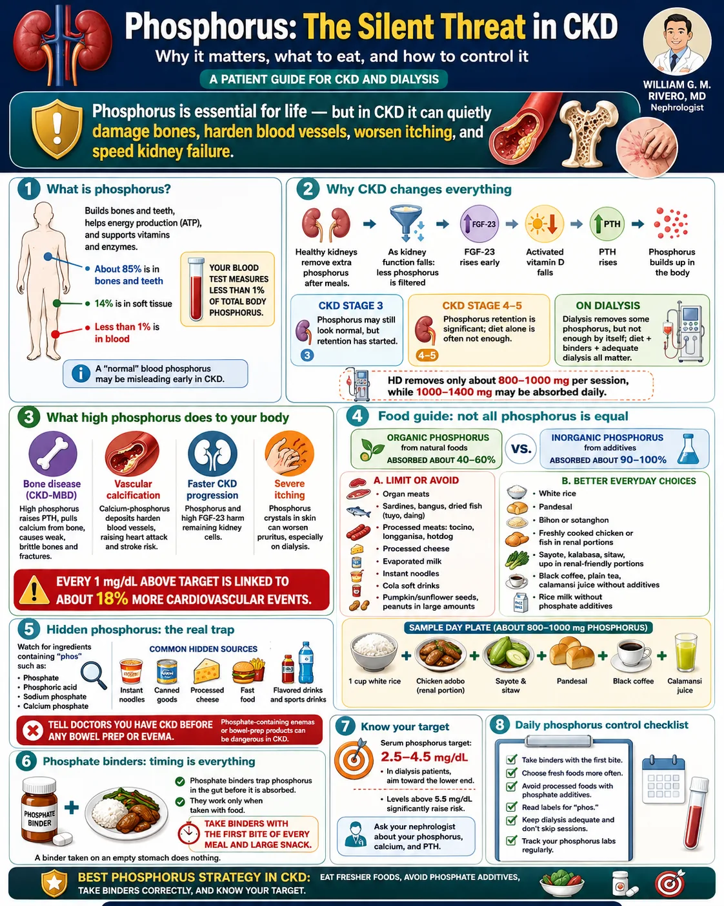

| Phosphorus & CKD Patient Guide | W.G.M. Rivero MD · FPCP · DPSN · PRC 0105184 · williamriveromd.com · 2026 |
|
Patient Education · Nephrology
Phosphorus Control in CKD
How to protect your bones and blood vessels from the silent damage of high phosphorus. Covers bone disease prevention, vascular calcification, Filipino food choices, and phosphate binders.
|
🦴
W.G.M. Rivero MD
FPCP · DPSN Nephrologist
williamriveromd.com
|
3.5–5.5 mg/dL Normal Range |
>5.5 mg/dL = Hyperphosphatemia |
Bone Disease Primary Risk in CKD |
Binders Key Treatment Tool |
|
The CKD-MBD Cascade
When kidneys fail, phosphorus accumulates in the blood. This triggers a dangerous cascade:
Step 1: High phosphorus → parathyroid glands sense the imbalance → release excess PTH (secondary hyperparathyroidism). Step 2: PTH pulls calcium from bones to normalize blood levels → bones weaken → renal osteodystrophy (brittle bones, fractures). Step 3: Calcium × phosphorus product rises → calcium-phosphorus crystals deposit in blood vessels → vascular calcification — the "stone heart" effect. Step 4: Calcified arteries → stiff vessels → hypertension, left ventricular hypertrophy, heart attack, stroke. Step 5: Phosphorus deposits in skin → severe itching (pruritus), and in the worst cases, calciphylaxis (skin necrosis — emergency). |
Phosphorus Targets by CKD Stage
KDIGO CKD-MBD 2017 update · PTH targets are wider in dialysis — discuss with your nephrologist.
|
🥩 Organic Phosphorus (Natural Food)
From whole foods: meat, fish, dairy, legumes, grains
Absorption: 40–60% absorbed — bound to protein, requires digestion to release.
Plant phytate: plant phosphorus is bound to phytic acid — absorbed even less (~20–40%). Legumes safer than they look.
Animal sources: meat, fish, eggs — organic but absorbed more than plant sources.
Examples: bangus, tilapia, manok, baboy, itlog, monggo, gatas, keso
|
🧪 Inorganic Phosphorus (Additives)
From food additives: cola drinks, processed meats, fast food
Absorption: 80–100% absorbed — free phosphate salts need no digestion; instantly absorbed in the gut.
Far more dangerous: gram for gram, additive phosphorus raises blood levels 2× more than natural food phosphorus.
Label clue: any ingredient ending in "-phosphate" or containing "PHOS" is inorganic.
Examples: Coke/Pepsi, hotdog, longganisa, instant noodles, processed cheese, fast food chicken
|
Phosphate additives in processed foods (cola drinks, fast food, processed meats, instant noodles) are absorbed at 80–100% — they are far more dangerous than natural food phosphorus. Even small amounts cause significant rises in blood phosphorus. If the label says "sodium phosphate," "phosphoric acid," "pyrophosphate," or "polyphosphate" — avoid it.
| For educational use only. This guide does not replace individualized dietary advice from your physician or dietitian. References: KDIGO CKD-MBD 2017 · KDIGO 2024 CKD Guidelines · FNRI Philippine Food Composition Tables 2023. | williamriveromd.com Page 1 of 6 · williamriveromd.com/guides/phosphorus-ckd |
| Phosphorus & CKD Patient Guide | W.G.M. Rivero MD · FPCP · DPSN · williamriveromd.com · 2026 |

| For educational use only · Not a substitute for individualized medical advice · williamriveromd.com | williamriveromd.com Page 2 |
Filipino Foods — Phosphorus Content Reference Heat-map by phosphorus load · All values per standard serving · Organic sources only — additive phosphorus (cola, processed meats) is far more dangerous regardless of listed mg |
Page 3 of 6 · williamriveromd.com |
| Food (Filipino name) | Standard Serving | Phosphorus | Absorption | CKD Note |
|---|---|---|---|---|
| 🔴 HIGH (>200 mg/serving or additive-phosphorus) — Limit or Avoid in CKD | ||||
| Atay ng manok / chicken liver | 100 g cooked | 350 mg | 60–70% | Organ meats are very high in phosphorus — avoid in CKD 3–5 |
| Evaporated milk (gatas evap) | ½ cup (120 mL) | 260 mg | 60–70% | Avoid — used heavily in Filipino cooking; use coconut milk sparingly instead |
| Cow's milk / fresh milk (gatas) | 1 cup (240 mL) | 230 mg | 60–70% | CKD 3–5: limit to ½ cup/day; dialysis: discuss with dietitian |
| Kidney / bato ng baboy | 100 g cooked | 240 mg | 60–70% | Organ meats extremely high — avoid in all CKD stages |
| Processed cheese (keso) | 1 slice (30 g) | 200 mg | 80–100% | Additive phosphates in processed cheese — absorbed almost completely; avoid |
| Monggo / mung beans (boiled) | ½ cup cooked | 200 mg | 20–40% | Plant phytate reduces absorption; OK small portions CKD 1–3; limit CKD 4–5 |
| Utong / bataw / black-eyed peas | ½ cup cooked | 180 mg | 20–40% | Legumes: phytate-bound; limit in CKD 4–5; boiling leaches some phosphorus |
| Pili nuts / mani (peanuts) | ¼ cup (30–35 g) | 130–140 mg | 40–60% | Limit in CKD 3+; nuts also high in potassium — double reason to restrict portions |
| Cola drinks (Coke, Pepsi, Royal) | 1 can (330 mL) | 40–50 mg* | 100% | *AVOID — phosphoric acid is 100% absorbed; listed mg understates danger. Banned in CKD. |
| Hotdog / longganisa | 1 piece (50 g) | 120 mg | 80–100% | Additive phosphates for color and texture — near-complete absorption; avoid |
| Instant noodles (Lucky Me, Payless) | 1 pack | 150 mg | 80–100% | Phosphate additives in seasoning powder — avoid; also very high sodium |
| 🟡 MODERATE (100–200 mg/serving) — Use Carefully, Watch Portions | ||||
| Pork / baboy (cooked) | 100 g | 195 mg | 50–60% | Limit portion to 60–80 g; choose lean cuts; avoid processed pork (tocino, ham) |
| Chicken / manok (cooked) | 100 g | 180 mg | 50–60% | OK in CKD 1–3; limit to 60–80 g CKD 4–5; avoid fast food chicken (phosphate-injected) |
| Tilapia (cooked) | 100 g | 175 mg | 50–60% | Good protein choice; limit portion; pair with rice and vegetables; take binder |
| Bangus / milkfish (cooked) | 100 g | 170 mg | 50–60% | Good choice; natural phosphorus; take phosphate binder with this meal |
| Tofu firm (tokwa) | 100 g | 120 mg | 30–50% | Plant phosphorus; lower absorption; good protein substitute for CKD |
| Egg / itlog (whole, boiled) | 1 large | 95 mg | 50–60% | Yolk is high in phosphorus; egg whites much lower; limit to 1 whole egg/day in CKD 4–5 |
| 🟢 LOW (<100 mg/serving) — Generally Safe Choices for CKD | ||||
| Rice, white (kanin, cooked) | 1 cup cooked | 68 mg | 20–30% | Safest staple carb for CKD — very low phosphorus; preferred over brown rice in CKD 4–5 |
| Pandesal / plain bread | 1 piece (50 g) | 40 mg | 30–40% | Plain pandesal is OK; avoid enriched or "fortified" bread with added phosphate |
| Kamote / sweet potato (boiled) | 1 medium | 50 mg | 20–30% | Low phosphorus; boil and drain to also reduce potassium; good root crop for CKD |
| Kangkong, pechay, sayote, okra, upo | 1 cup cooked | 20–50 mg | 20–30% | Most cooked vegetables are low phosphorus — excellent choices for all CKD stages |
| Cassava / kamoteng kahoy | 1 cup boiled | 28 mg | 20–30% | Very low phosphorus; good root crop; avoid processed cassava products with additives |
| Gabi / taro (boiled) | 1 cup cooked | 40 mg | 20–30% | Low phosphorus and potassium; safe for most CKD stages; traditional Filipino staple |
| Papaya, calamansi, apple, saging (1 pc) | 1 piece / ½ cup | 20–30 mg | 20–30% | Fruits generally low phosphorus; watch potassium in CKD 4–5 (banana: moderate K) |
| Cooking oils (coconut, canola) | 1 tbsp | 0 mg | — | Zero phosphorus; use in normal cooking amounts |
| Sago / rice noodles | ½ cup cooked | ~5 mg | — | Nearly zero phosphorus; excellent CKD-friendly carbohydrate |
| KDIGO CKD-MBD 2017 · FNRI Philippine Food Composition Tables 2023 · Shinaberger et al., Kidney Int 2008 · Educational use only. | williamriveromd.com · Page 3 of 6 |
Phosphate Binders · Meal Timing · Cooking to Reduce Phosphorus Available in the Philippines · When and How to Take · Practical Kitchen Techniques |
Page 4 of 6 · williamriveromd.com |
| Binder | Brand (PHL) | Usual Dose | Take With | Key Notes for Filipino Patients |
|---|---|---|---|---|
| Calcium carbonate | Caltrate, generic CaCO₃ | 500–1500 mg per meal | WITH meal | Most affordable; widely available; doubles as calcium supplement — but watch for hypercalcemia and vascular calcification with overuse. Avoid in patients with high calcium or calcification. |
| Sevelamer HCl | Renagel | 800 mg 3× per day with meals | WITH meal | No calcium load — preferred in patients with vascular calcification or hypercalcemia. Also lowers LDL. More expensive; requires prescription. Swallow whole — do not crush. |
| Lanthanum carbonate | Fosrenol | 500–1000 mg per meal | WITH meal | Chew thoroughly before swallowing — never swallow whole. Very effective. No calcium. Expensive; limited availability in provinces. Good for patients who cannot take sevelamer. |
| Calcium acetate | PhosLo, generic | 667 mg per meal | WITH meal | Contains less elemental calcium than carbonate — lower hypercalcemia risk. Good second-line calcium-based option. Take exactly at the start of eating. |
| Aluminum hydroxide | Antacid generics | Short-term use only | WITH meal | Effective but aluminum accumulates in dialysis patients → neurotoxicity and bone disease. Use only for short-term rescue in severe hyperphosphatemia — not for chronic use. |
Phosphate binders work by binding dietary phosphorus inside the gut before it is absorbed. If taken before or after eating, the food has already passed — the binder cannot reach the phosphorus. Skipping even one meal dose allows that entire meal's phosphorus to be fully absorbed. Take your binder at the first bite of every main meal, every day.
|
DANGEROUS — Avoid These Label Ingredients
|
QUICK RULE: Anything with "PHOS" = Avoid
In the Philippines, ingredient labels may be in English or Filipino. Look for "PHOS" anywhere in the ingredient name — if you see it, put the product back.
Hidden sources: "fortified" biscuits and breads, instant coffee mixes, flavored powders (Tang, Milo in excess), canned sardines in tomato sauce with preservatives, processed tocino/corned beef. Safer choices: plain canned sardines in water, fresh fish, plain rice, home-cooked ulam without seasoning packets. |
①
Boil Meat & Fish
Boiling meat (manok, baboy) or fish (tilapia, bangus) in a large volume of water leaches 30–55% of phosphorus into the cooking water. Discard the water — do not make soup from it. Then cook the boiled meat in your sinigang, adobo, or ginisa.
|
②
Soak Legumes Overnight
Soak dried monggo, beans, or garbanzos in water overnight. Drain and rinse before cooking. This removes 20–30% of phosphorus. Then boil in fresh water (repeat boiling once for maximum reduction). The phytate also reduces absorption further.
|
③
Choose Fresh Over Processed
Fresh galunggong, tilapia, or bangus has natural (organic) phosphorus — partly absorbed. Processed or canned fish with preservatives has additive phosphorus — almost fully absorbed. Same logic for chicken: home-cooked > fast food (phosphate-injected).
|
| KDIGO CKD-MBD 2017 · Kalantar-Zadeh et al., JASN 2010 · Educational use only. Binder choices must be individualized by your nephrologist. | williamriveromd.com · Page 4 of 6 |
Symptoms · Lab Monitoring · Special Situations Recognizing Hyperphosphatemia · Target Lab Values · Dialysis, Vegetarian, Children, KA Supplements |
Page 5 of 6 · williamriveromd.com |
|
🩺 Symptoms of Hyperphosphatemia
Warning: Hyperphosphatemia is often silent until advanced — many patients feel fine even with dangerously elevated phosphorus. This is why regular blood tests are essential.
When symptoms appear, they include:
|
🔬 Lab Monitoring Targets
Ca × P product >55: significantly increased risk of vascular calcification and calciphylaxis. Dialysis patients: phosphorus checked before each session (HD 3× weekly).
📊 What Your Phosphorus Number Means3.5–5.5 mg/dL: Target range — keep doing what you're doing. |
🩸 Dialysis Patients
|
🥦 Vegetarian / Vegan CKD Patients
|
👶 Children with CKD
|
💊 KA (Ketoacid) Supplement Users
|
Calciphylaxis (calcific uremic arteriolopathy) is a rare but devastating complication of very high calcium × phosphorus product. It causes painful, spreading skin lesions with black/necrotic centers, typically on the abdomen, thighs, and breasts. Mortality is up to 80%. If you develop unexplained painful skin wounds that are not healing — go to the ER immediately. Tell them you have CKD and are on dialysis. Early treatment with sodium thiosulfate and wound care may be life-saving. Prevention: keep Ca × P product below 55.
| KDIGO CKD-MBD 2017 Update · KDIGO 2024 CKD Guidelines · Nigwekar et al., N Engl J Med 2018 (calciphylaxis) · Educational use only. | williamriveromd.com · Page 5 of 6 |
Sample Low-Phosphorus Filipino Day · Key Takeaways Built from Everyday Filipino Foods · Binder Timing Shown · Practical Kitchen-to-Table Guide |
Page 6 of 6 · williamriveromd.com |
| Meal | Food | Approx P | Binder Timing |
|---|---|---|---|
| Breakfast | 1 cup white rice + 1 boiled egg white (discard yolk) + 1 cup kangkong ginisa (canola oil, garlic) + water | ~110 mg | Take binder at first bite if prescribed |
| Mid-morning | 1 medium papaya or apple + plain water (no canned juice, no cola) | ~15 mg | Snack: no binder needed (very small P load) |
| Lunch | 1 cup white rice + boiled tilapia 60 g (boiled first, water discarded) + 1 cup sayote cooked + calamansi juice (unsweetened) | ~175 mg | Take binder WITH first bite — ESSENTIAL |
| Afternoon | 1 small kamote (boiled) or 1 small piece plain pandesal + water | ~55 mg | Light snack: small P load — discuss with dietitian |
| Dinner | 1 cup white rice + 60 g boiled manok (boiled first, water discarded) + 1 cup pechay cooked + gabi + water | ~185 mg | Take binder WITH first bite — ESSENTIAL |
🎯 The Three Non-Negotiables1. Avoid cola drinks — phosphoric acid is 100% absorbed. Even one can raises phosphorus significantly. 🥦 Safe Food Choices SummaryBest grains: white rice, plain pandesal — lowest phosphorus of all staples. 💡 The Absorption InsightA food with 200 mg phosphorus at 40% absorption delivers only 80 mg to your blood. A cola drink with 50 mg phosphorus at 100% absorption delivers 50 mg — almost as much, from a tiny serving. The amount on the label is not the amount that harms you — absorption percentage is what matters. Additive phosphorus always wins this comparison, always in the wrong direction. |
⚠ What to Avoid — The Danger List
🚫 Emergency Warning Signs — Go to ER
Do not wait for your next clinic appointment if you have calciphylaxis symptoms. Mortality is 50–80% — early ER treatment is life-saving. |
| For educational use only. This guide does not replace your physician's or dietitian's individualized advice. Phosphorus restrictions and binder choices must be tailored to your kidney function, labs, medications, and comorbidities. Always bring this guide to your next nephrology appointment. | williamriveromd.com Page 6 of 6 · williamriveromd.com/guides/phosphorus-ckd |